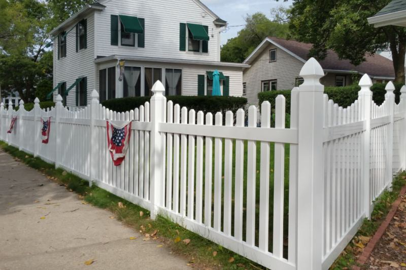

Wood or vinyl
Vinyl costs more up front and skips the paint. Wood costs less at install and needs finish work later.
Picket fences
A picket fence marks the yard without turning it into a solid wall. In Albuquerque that matters, because front-yard walls are generally kept low. Wood and vinyl picket are both options. A six-foot privacy fence is not a picket fence.


Use picket along a front yard, a garden edge, or a side return where you want the house visible and the line defined. It is the style that most often fits the city’s low front-yard limit. Corner lots are stricter near the street, so the height is part of the layout, not an afterthought.
If the goal is to block a neighbor’s view of the patio, you want wood fencing or vinyl fencing in the rear yard. A picket fence will not do that job, and a tall privacy fence in the front setback is how people end up needing a variance.
Front yard, side yard, or rear. The allowed height follows the spot, not the photo.
Painted or stained wood, or vinyl that holds its color without a brush.
Pickets are laid out so the gaps stay consistent around gates and corners.
The walk gate uses the same picket so the opening does not look like an add-on.
We do not publish a price list. These are the details that move an estimate.
Vinyl costs more up front and skips the paint. Wood costs less at install and needs finish work later.
A short front run is a small job. Extra gates and returns around a corner add footage.
Pointed, dog-ear, and scalloped tops are different cuts and different prices.
Grade along a street and a corner sight line take more layout than a flat side yard.
A front-yard picket line is often a smaller job than a backyard privacy fence, so the total can be lower even when the per-foot material is similar. Wood versus vinyl, the number of gates, and the corner layout move the quote. We measure before we price it.
That is the usual place for it. The city’s published guidance keeps most front-yard walls and fences around three feet unless a variance is approved. A short picket fits that rule better than a privacy fence. Corner lots and some overlays are tighter, so we check the address.
Yes. Wood picket can be painted or left to weather. Vinyl picket holds a white or colored finish without that work. Both are spaced so you can see through them. Neither one is a stand-in for a six-foot privacy panel.
If the dog has to be contained, a short front-yard picket is the wrong tool. Put the taller fence in the side and rear yard, where the height rules are different, and keep the street side low. We will not sell a tall front fence and hope the city ignores it.
We can come close on spacing, height, and cap style. An exact match depends on the wood size or the vinyl profile. If only a few pickets are broken and the posts are sound, a repair is the smaller job.